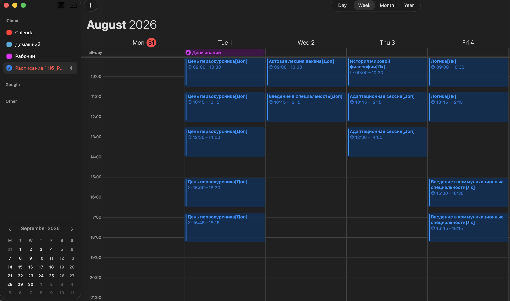
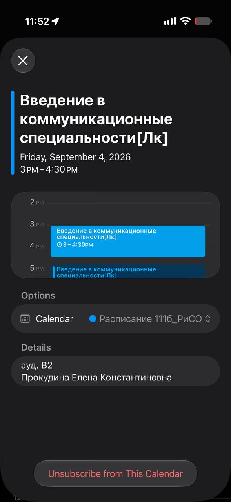

109б
Реклама и связи с общественностью
Небольшой проект по внедрению расписания своей группы в календарь iCloud. Изначально делался для себя, но теперь им можно поделиться со всеми.
Реклама и связи с общественностью
Реклама и связи с общественностью
Реклама и связи с общественностью
Реклама и связи с общественностью
А ещё можно добавить даты каникул
Добавить ↗
